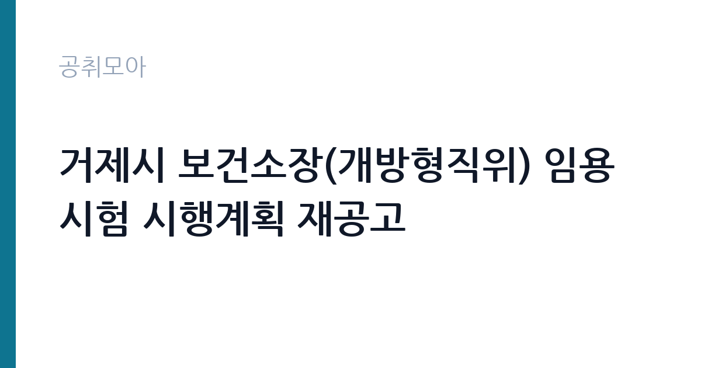

[지자체] 거제시 보건소장(개방형직위) 임용시험 시행계획 재공고
경상남도 거제시 · 경남 · 마감 2026-11-13 (D-12) · 출처 나라일터

한눈에 보는 모집 조건
| 기관 | 경상남도 거제시 |
|---|---|
| 공고명 | 거제시 보건소장(개방형직위) 임용시험 시행계획 재공고 |
| 고용형태 | 임기제 |
| 근무지 | 경남 |
| 게시일 | 2026-11-01 |
| 마감일 | 2026-11-13 (D-12) |
지원자격, 이렇게 읽으세요
- 일반임기제 개방형4호 1명
- 접수 ~2026-11-13 마감
- 세부 조건은 원문 공고문 확인
필수요건은 의료법에 따른 의사면허 소지자입니다. 여기에 네 갈래 경력요건 가운데 하나를 충족해야 합니다. 박사학위 소지자는 공무원 또는 민간 근무·연구경력 4년 이상이면서 관련분야 경력 2년 이상, 석사학위 이하는 근무·연구경력 7년 이상이면서 관련분야 2년 이상입니다. 자격증 기준으로는 근무·연구경력 4년 이상이면서 의사면허 취득 후 관련분야 2년 이상이면 됩니다. 공무원 경력 기준은 관련분야 1년 이상에 4급 상당 이상, 또는 관련분야 3년 이상에 5급 상당 이상입니다. 민간인은 관련분야 2년 이상이면서 법인이나 비영리 민간단체에서 임용예정 직위에 상응하는 부서 단위 책임자 이상으로 근무한 경력이 필요합니다. 관련분야는 보건·식품위생·의료기술·의무·약무·간호 분야입니다. 함정은 경력 인정 시점입니다. 공고문은 시험공고일 현재 퇴직 후 3년이 경과되지 않은 경력만 인정한다고 못 박고 있습니다.
이 공고의 포인트
첫 번째 포인트는 재공고라는 점입니다. 앞선 공고에서 적격자를 찾지 못했거나 지원자가 모집인원에 미달했을 가능성이 있어, 조건을 충족하는 지원자에게는 실질적인 기회가 됩니다. 두 번째는 연봉 하한액이 공개되어 있다는 것입니다. 개방형 4호 임기제로 임용되면 연봉 하한액 7,049만원이 적용되고, 여기에 연봉하한액의 130퍼센트 범위 안에서 경력과 자격을 고려해 더 높게 책정할 수 있습니다. 세 번째는 신분입니다. 현직 공무원이 지원하면 경력직공무원으로 임용되고, 민간인은 임기제공무원으로 채용계약을 맺습니다. 같은 직위라도 신분과 보수 체계가 달라지므로 본인 상황에 맞는 경로를 확인해야 합니다.
전형은 어떻게 진행되나
1차는 형식요건 심사 방식의 서류전형입니다. 자격과 경력이 소정 기준에 맞는지를 서면으로 봅니다. 응시인원이 선발예정인원의 8배수 이상이면 직무에 적합한 기준에 따라 7배수 이상으로 서류전형 합격자를 제한할 수 있습니다. 2차는 적격성 심사로, 서류심사와 면접시험을 함께 봅니다. 평가위원이 전문가적 능력, 전략적 리더십, 변화관리 능력, 조직관리 능력, 의사전달 및 협상능력 등 직무수행요건을 검정합니다. 해당 분야에 적격자가 없으면 채용하지 않을 수 있다고 공고문이 명시하고 있습니다. 응시원서는 방문 또는 등기우편으로만 접수하고, 5급 이상 응시수수료는 1만원입니다.
원문에서 확인한 전형 방식
○ 모집분야 : 보건소장 ○ 선발직급 : 지방과학기술서기관 또는 일반임기제(개방형 4호) ○ 고용형태 : 경력직 또는 임기제 ○ 자격요건 : 공고문 참조 ○ 접수기간 : 2026년11월09일 ~ 2026년11월13일 ○ 응시방법 : 방문접수 또는 등기우편접수 ○ 문의처 : 055-639-3324
이런 분께 추천해요
- 의사면허를 보유하고 보건행정 관리자 경력을 쌓아온 분. 보건소 업무 관련분야 경력과 부서 책임자 이상 경력이 함께 인정됩니다.
- 현직 4급·5급 상당 공무원으로 보건 분야에서 일해온 분. 공무원 경력 기준을 충족하면 경력직공무원 신분으로 임용될 수 있습니다.
- 박사학위를 가진 의사로서 연구·실무 경력을 함께 갖춘 분. 박사 기준은 근무·연구경력 4년 이상으로 요건이 상대적으로 짧습니다.
지원 전 체크리스트
- 의사면허증 사본을 준비했는가. 공고문은 의료법 제5조에 따른 의사면허 소지자를 필수요건으로 명시하고 있습니다.
- 경력증명서에 근무기간과 담당업무, 직위가 구체적으로 적혀 있는가. 항목이 빠지면 경력으로 인정되지 않을 수 있습니다.
- 퇴직 후 3년이 지난 경력은 없는지 확인했는가. 공고문이 공고일 기준으로 인정 범위를 제한하고 있습니다.
- 응시수수료 1만원과 거제시 수입증지를 준비했는가. 우편접수는 통상환증서로 동봉해야 합니다.
모집 일정과 제출 타이밍
접수는 2026년 11월 9일 월요일부터 11월 13일 금요일까지 5일간입니다. 업무시간인 오전 9시부터 오후 6시까지 받고, 점심시간 12시부터 1시까지는 접수하지 않습니다. 방문접수는 거제시청 행정과 인사팀이며 대리접수도 가능합니다. 우편접수는 접수 마감일 소인까지 인정되지만, 등기우편 접수자는 접수기간 안에 전화로 접수 여부를 반드시 확인해야 합니다. 서류전형 합격자 발표는 11월 27일 금요일이고, 면접시험 일자는 별도로 공지됩니다. 최종합격자 발표 역시 별도 공지 방식입니다.
직무 이해하기: 지자체
보건소장은 지역보건법과 지역보건법 시행령에 근거해 보건소를 총괄하는 자리입니다. 거제시가 제시한 주요업무는 지역 의료서비스 종합계획 수립과 집행, 전염병 예방 및 관리, 보건의료 향상과 관련 연구, 의료인과 의료기관·약사·약국 지도, 예방접종과 건강증진·보건교육입니다. 행정직이 아닌 의사 출신을 요구하는 이유가 여기에 있습니다. 의료기관 지도와 감염병 대응은 의료 전문성이 없으면 판단이 어렵습니다. 실무에서는 보건소 산하 부서의 사업을 조정하고, 시 보건정책 예산을 편성하며, 관내 의료기관과 협력체계를 만드는 일이 중심이 됩니다. 하루 업무는 회의와 결재, 민원 대응이 큰 비중을 차지합니다.
자기소개서 작성 팁
개방형직위의 자기소개서는 관리자로서 무엇을 바꿀 것인가를 묻는 문서입니다. 첫 문단에서는 본인의 진료·보건 경력 가운데 보건행정과 직접 연결되는 지점을 한두 개 골라 수치로 제시하십시오. 두 번째 문단에서는 거제시의 보건 환경을 이해하고 있다는 점을 보여주십시오. 섬 지역과 도심의 의료 접근성 차이, 고령 인구 비중처럼 이 지역에서만 나타나는 문제를 언급하면 지역 이해도가 드러납니다. 세 번째로는 2년 임기 동안의 우선순위를 세 가지로 압축해 제시하십시오. 감염병 대응체계, 취약계층 방문보건, 만성질환 관리처럼 공고문에 적힌 업무와 연결되는 주제를 고르면 됩니다.
면접 준비 포인트
면접에서 가장 비중이 큰 항목은 전략적 리더십과 조직관리 능력입니다. 보건소장은 의사 출신이지만 조직을 이끄는 관리자이므로, 갈등 관리 사례와 예산 조정 경험을 구체적으로 물을 가능성이 높습니다. 답변은 상황, 판단, 조치, 결과 순으로 정리하십시오. 두 번째로는 외부 협력 경험을 확인합니다. 지자체, 병원, 보건의료 단체와 협력해 성과를 만든 사례가 있으면 좋습니다. 세 번째는 위기 대응입니다. 감염병 유행이나 응급 상황에서 내린 판단을 사례로 준비해 두면 변화관리 능력 항목에 대응할 수 있습니다. 마지막으로 거제시 보건사업에 대한 구체적 계획을 물을 수 있으므로 주요 지표 두세 개는 미리 확인해 두십시오.
급여·근무조건 읽는 법
이 공고의 보수는 두 갈래입니다. 현직 공무원이 경력직으로 임용되면 공무원 보수 관련 규정에 따릅니다. 민간인이 임기제공무원으로 채용되면 개방형 직위 임기제공무원의 연봉 기준이 적용되고, 공고문에 명시된 하한액은 7,049만원입니다. 여기에 연봉하한액의 130퍼센트 범위 안에서 채용예정자의 경력·능력·자격을 고려해 결정할 수 있다고 안내되어 있습니다. 상한액은 이 공고문에 기재되어 있지 않습니다. 연봉 외에 직급 보조비, 정액급식비, 가족수당, 시간외 근무수당 등은 예산 범위에서 지방공무원 수당 규정에 따라 별도로 지급됩니다. 임기는 2년이고 근무실적에 따라 총 5년 범위 안에서 연장될 수 있습니다.
자주 묻는 질문
- 의사면허만 있으면 지원할 수 있나요?
의사면허는 필수요건이고, 여기에 경력요건 가운데 하나를 함께 충족해야 합니다. 예를 들어 박사학위자는 근무·연구경력 4년 이상과 관련분야 2년 이상이 필요합니다. - 경력은 어디까지 인정되나요?
보건·식품위생·의료기술·의무·약무·간호 등 보건소 업무 관련분야 경력이 인정됩니다. 다만 공고일 현재 퇴직 후 3년이 경과된 경력은 인정되지 않습니다. - 접수는 어떻게 하나요?
방문접수 또는 등기우편접수만 가능합니다. 접수기간은 2026년 11월 9일부터 13일까지이고, 우편접수자는 접수기간 안에 전화로 접수 여부를 확인해야 합니다.
함께 보면 좋은 공고
[지자체] 2026년 하동군 지방시간선택제임기제공무원(축제분야 전문요원) 채용 — 마감 2026-11-13[지자체] 서대문구 시간선택제임기제공무원(공공디자인 분야) 채용 공고 — 마감 2026-11-18[지자체] 2026년 상록수보건소장(개방형직위) 임용시험 시행계획 2차 재공고 — 마감 2026-11-16출처: 나라일터 공개정보를 바탕으로 공취모아가 정리한 안내글입니다. 모집 조건·일정은 변경될 수 있으니 지원 전 반드시 원문 공고문을 확인하세요. 본 글은 정보 제공용이며 합격을 보장하지 않습니다.